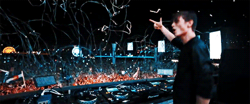
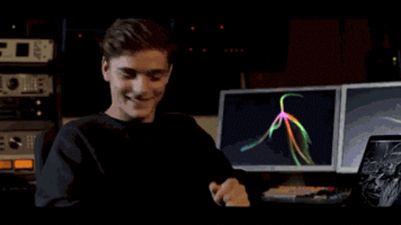

MARTIN GARRIX
Martin Garrix, cuyo nombre real es Martijn Gerard Garritsen, nació el 14 de mayo de 1996 en Amstelveen, Países Bajos. Es un DJ y productor musical reconocido a nivel mundial, especialmente en el género de la música electrónica y el EDM (Electronic Dance Music).
Inicios De Su Carrera
Estudios
Garrix asistió a la Herman Brood Academy, una escuela de producción musical en Utrecht, donde perfeccionó sus habilidades y comenzó a producir sus primeras pistas.
Primeros Lanzamientos
En 2012, a los 16 años, lanzó "BFAM" (con Julian Jordan) y firmó con la discográfica Spinnin' Records, una de las más importantes en el ámbito de la música electrónica.

